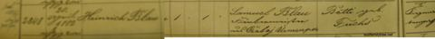

Heinrich Blau
1882–1937
Life events
| Born | |
|---|---|
| Lived | 8 Jan 1894 · 1020 Kleine Pfarrgasse 29, Vienna, Austria Map · Per Edmund's birth record. |
| Married | 30 Jun 1919 · Budapest, Hungary Map  |
| Divorced | 9 Apr 1921 · Budapest, Hungary Map |
| Married | 1932 · Leopoldstädter Tempel, 1020 Tempelgasse 5, Vienna, Austria Map |
| Lived | 21 Oct 1937 · 1020 Lichtenauergasse 7, Vienna, Austria Map · Occupation: artist. per death record |
| Died | |
| Buried |
Family

Unknown spouse
Photos

Heinrich Blau
Heinrich Blau
Jakob Kohn
Heinrich Blau

Heinrich Blau
Heinrich Blau